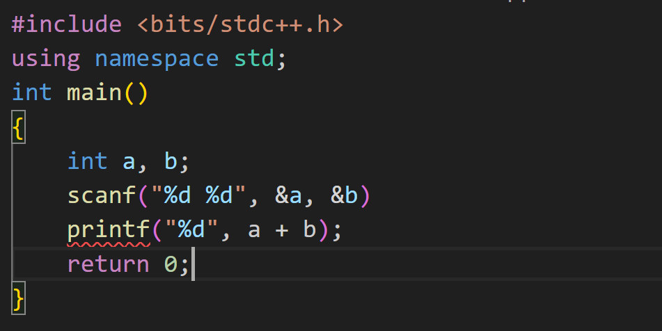
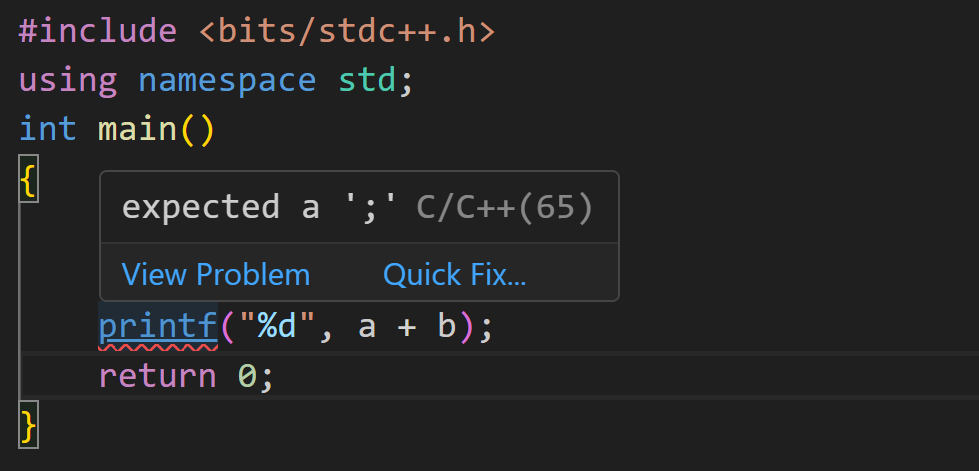

如何 Debug¶
特别提醒：请先将自己的代码在本地测试，至少保证不会发生编译错误且通过样例后再提交到 OJ 上，不要将 OJ 当作测试代码的唯一平台。
爱护 OJ ，人人有责。
关于程序设计基础的知识，OI wiki （相关素材已搬运至“指南”“程序设计基础”部分）上已有详尽的介绍，在本次讲义中不再赘述。
什么是 bug ，什么是 debug ？
所谓 Bug ，是指软件运行时因程序本身有错误而造成功能不正常、死机、数据丢失、非正常中断等现象。 Debug (调试)就是通过测试以消除 bug 的过程。 关于 bug 为什么叫做 bug ，可以参考 你知道BUG为什么叫BUG么？。
在 Debug 之前¶
在 debug 之前，请先保证程序能够通过编译。如果程序都不能顺利被转换为可执行文件，如果程序都不能顺利运行的话，自然也没有 debug 可言。
保证程序“语法”正确其实是个熟练活，即使你是零基础的同学，经过三周左右的训练，也能基本保证可以轻松应对程序编译错误的情况。关于C++语法相关知识，OI wiki 等相关资源处已有详尽介绍，请同学们认真学习。
此外，许多编辑器/IDE也有代码错误提示的插件。例如VSCode在安装了C/C++ Extensions （如上图所示）后就可以自动显示程序的一些语法错误（如下图）。
|  |  |
在适当的位置输出¶
输出调试法是一种门槛低、收益高的经验方法。输出调试法就是通过输出程序的部分中间结果来验证程序中间步骤的正确性，同时也便于编程者观测程序运行的结果。
const int N = 100005;
int n, a[N], sum[N];
int main()
{
scanf("%d", &n);
for (int i = 1; i <= n; i++)
scanf("%d", &a[i]);
for (int i = 1; i <= n; i++) {
sum[i] = sum[i - 1] + a[i];
printf("sum[%d] is %d\n", i, sum[i]); // ATTENTION HERE
}
printf("%d", sum[n]);
return 0;
}
上图所示的实例中，程序接受一串数字的输入，输出这串数字的和。我们构建了一个数组sum[]，其中sum[i]表示输入中前 \(i\) 个数字的和。通过标记行的输出，编程者得以检查sum[i]的值是否正确，从而验证中间结果的正确性。
一般来说，代码错误越早暴露、越接近 bug 的源头，越容易被纠正。如果编程者在sum[i] = sum[i - 1] + a[i]处就犯了错误，那么在循环刚开始的时候编程者就可以通过观察输出的sum[i]的数值发现错误，而不必等到最后输出整个数组的和时才发现结果不正确。
通过熟练度的提升，编程者可以更好地知道应该在何处输出什么内容以验证中间结果，或者查找代码 bug 。在大二上学期计算机系统基础课程的 PA 实验中，仅熟练运用输出调试法 debug 就可以顺利通过这个令许多人闻风丧胆的实验。
在提交代码到 OJ 前，切记要先删除输出调试法增加的 printf内容。
在适当的位置插入 assert 断言¶
assert 调试法和输出调试法很相似（关于assert语句是什么，请stfw；关于stfw是什么，请rtfm），输出调试法通过输出中间内容以 check ，而 assert 调试法通过断言关于中间内容的一些必要条件来检验程序的正确性。
int main()
{
int len;
// ...
// compute the length of pillar
// ...
assert(len >= 0);
printf("%d", len);
return 0;
}
例如，假如我现在要计算某根柱子的长度，记录在变量len中并输出。那么在printf前，我可以插入一条assert(len >= 0)语句断言计算出的长度为非负数。如果该处 assert fail ，那么说明在之前的代码中一定出现了 bug 。
在运用assert断言前，请认真思考断言内的条件是否真的是必要条件。错误条件的添加可能会导致正确的代码触发 assert fail ，并给你带来不必要的困扰。——写oslab有感
手搓数据测试¶
顾名思义，就是自己造数据并进行测试。在造数据的时候，请尽量造与当前代码已通过数据有一些差别的数据，尤其是边界情况（corner case）的数据。
const double eps = 1e-9;
int main()
{
double x1, y1, x2, y2;
scanf("%lf %lf %lf %lf", &x1, &y1, &x2, &y2);
if (fabs((y1 / x1) * (y2 / x2) + 1) < eps)
// Please learn how to judge if two double-variables are equal.
printf("Vertical\n");
else
printf("Not Vertical\n");
return 0;
}
例如，在以上代码中，我想判断向量\((x_1,y_1),(x_2,y_2)\)在二维平面中是否垂直。在测试这个代码的过程中，我可能测试了很多组数据（例如\(x_1=2,y_1=1,x_2=-1,y_2=2\)）都是对的。但这些数据其实都是类似的，反复测试性质类似的数据并不能很好地保证程序的正确性：如果我构造\(x_1=3,y_1=0,x_2=0,y_2=2\)的数据并测试，这段代码还能输出正确的结果吗？我现在构造的这组数据，和之前构造的数据的差别在哪里？
机搓数据对拍¶
算法竞赛中的常用方法，本次讲义中不要求掌握。
推荐学习：
1，https://www.cnblogs.com/reddest/p/5925018.html （请勿学习改博客中的代码风格）
2，自行上网搜索：对拍
面向助教/朋友/对象 debug 法¶
你可千万不能这样。 debug 的能力和因此给你带来的挑战、困扰乃至于痛苦都是你“应有的训练”，你应当自己完成相关任务。
推荐有编程基础的同学学习：调试理论与实践 (Fault; Failure; Error; 调试一切) [南京大学2023操作系统-P8] (蒋炎岩)
----------END----------
（本讲义部分参考2021级问题求解助教朱宇博学长相关slides内容，在此特别鸣谢）